黎曼重建技术报告 · R04交界精修
完整流程视频：从分片到最终资产
分片 → 稠密跟踪 → Local SfM / patch估计 → 参考表面辅助重估与重建 → ARAP全局拼合 → DG形变 → 逐片纹理 → 最终模型与动画。
94秒，1280×720、24fps，中英字幕，无配音。按九个章节查看（项目内文件） · 直接打开视频（项目内文件）
各阶段使用已保存的实际结果。早期独立SfM试验未直接作为最终脸，后续参考表面辅助重建单独标注；旋转展示保存状态，不表示求解器迭代录像。头发连接修复专题保留在R03章节。
当前交付：R04交界精修（2026年11月16日）。新增额头、太阳穴及机械耳周的几何/纹理修订，并提供全部240帧原片对比、说话近景和额外转头检查。R03共享头部绑定作为本轮基础保留。
R02阶段记录：图18—27与原生Render Video保留；R03动态连接记录见图28—29；当前R04交界精修见图30—35。
面向概念设计与3D资产生成的局部高保真与全局近似刚性重建
基础实验记录：2026年11月14日；资产与渲染更新：R04 / 2026年11月16日。输入为单目RGB视频，无深度观测。
1 问题定义 方法原则与资产用途
我们将这条方法路线命名为“黎曼重建”：将整体分成相互重叠的局部块，以局部高保真和细节保留为目标，通过近似刚性约束协调全局拼合，生成保持设计风格与角色一致性的可编辑3D资产。
AI设计视频保留了特征 但未强制满足多视图几何约束
本项目的输入是一段由AI生成的人物设计视频。它较好地保持了人物身份、五官、发型、机械装饰、材质风格等视觉特征，转头和表情在观看时也具有较好的连续性。这使视频能够传达设计师最关心的风格与细节，并成为生成3D资产的设计依据。
困难在于，视觉特征连续并不保证各帧都能由同一个固定三维对象和一组物理相机严格解释。局部比例、表面起伏、遮挡与高光可能随帧细微变化。Stereo、SfM和多视图立体重建依赖相容的投影、稳定的表面对应及可匹配的外观；本例AI序列没有强制满足这些条件，因此不能直接预设全片具有实拍同一物体时通常具备的多视图一致性。
这也是传统路线在本项目中容易得到模糊结果的一个关键原因：把不相容的观测强行解释为严格刚体多视图数据时，相机、深度与形状会互相补偿，几何在不同视角之间折中，局部凹凸被压平或变成错误起伏；纹理若按不准确的对应关系跨帧叠加、融合或平均，细节也会变糊。前期实验出现的深度不稳、加密后的坑洞以及模糊的几何与纹理，与这类约束失配相符。跟踪质量、视差、先验与优化配置也会影响结果，现有实验尚未把这些因素完全分离。
把整体分成局部块 优先保持每块的高保真与细节
我们的方法把整体分成相互重叠的局部块，为每块选择清晰、可见、连续的观察窗口，利用可靠追踪、局部重建与局部纹理更新，优先保持该块的语义特征、轮廓、表面起伏和纹理细节。局部高保真是设计目标：不要求所有块首先服从一套完全严格的全局刚体解释，再通过牺牲细节去消除全部跨视角差异。
全局拼合以近似刚性为原则。通过共享对应、重叠关系与ARAP等软约束维持整体结构和连续性，同时允许小幅、平滑的局部调整。几何测量上可能分辨出微变形，但目标是在预期观看距离、镜头和动作范围内，整体仍显得稳定、连续，观感上不易察觉这些变化。这是需要通过多视角和运动渲染检查的感知目标，并不意味着任意形变都可以接受。
局部欧氏重建与全局小形变协调
黎曼重建的基本原理是：在局部进行刚性或近似刚性重建，为每个局部块建立自己的欧氏坐标系；在全局拼合时，通过重叠区域的对应关系协调这些局部坐标，在局部形变较小的条件下实现连续与一致。它把局部形状的保真与全局关系的协调分开处理。
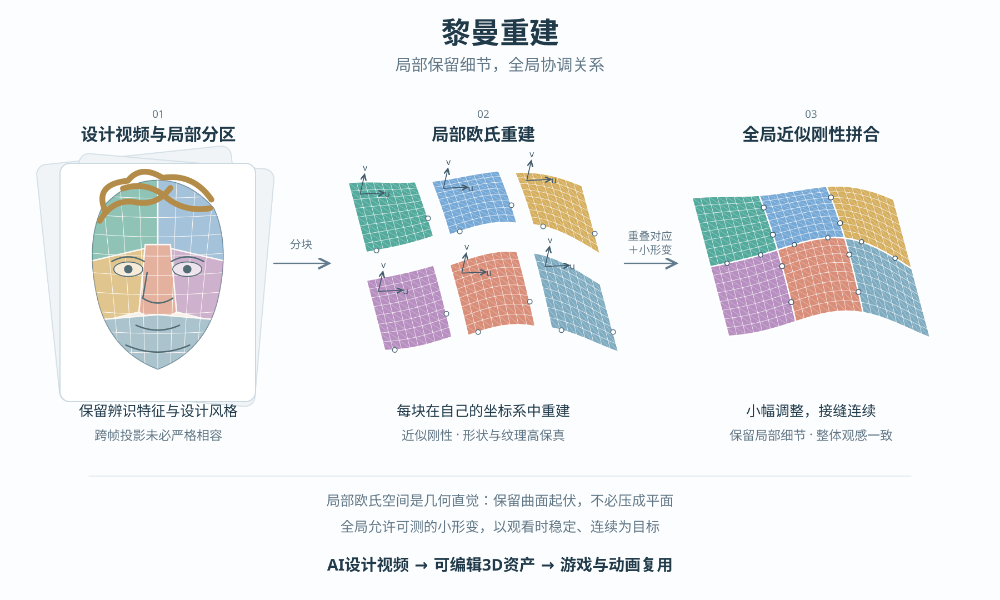
直观上，每个足够小的局部块就像一个近似欧氏的局部空间，可借助“切空间”来理解：在该区域内使用熟悉的欧氏距离、旋转和平移恢复结构，再通过块与块之间的坐标转换和重叠约束，组织成完整表面。这里的局部重建可以保留曲面和深度起伏，并不要求把一个有限大小的patch真正压平成二维切平面。
全局一致性由相邻块的共享点、重叠边界和相对尺度与位姿共同约束。先把各块对齐到统一尺度与坐标基准，再以ARAP等近似等距约束限制邻域边和局部形状的变化，允许必要的小幅连续调整，减少接缝、错位与突变。这样，整体可以存在可测的微变形，同时尽量保留每块的高保真结构与细节。
连续、近似等距与视觉一致性需要分别检查：共享边界应当对齐，邻域形变应当受限，多视角和运动渲染应当保持风格与角色特征稳定。位置连续不自动保证法线或曲率连续，ARAP也不自动保证全局无自交，因此仍需检查边长变化、法线反向和接缝外观。
“局部欧氏空间与全局协调”是本方法的几何直觉。当前实现采用局部透视SfM、重叠对应与Sim(3)对齐、以及ARAP等离散约束；尚未显式构造黎曼度量、流形图册或指数与对数映射，不能把这一命名本身当作相应数学性质已经得到证明。
三条核心约束原则：可靠观测、切向修正、稀疏控制
以下固化48节点 Embedded Deformation Graph 版本的设计原则及其历史实验记录。稠密追踪点和Landmark只提供Target，不直接成为自由顶点控制；变形控制与图像观测分离。
原则一：法线朝向门控
对固定材料点追踪及Landmarker，同时检查参考帧和当前帧：仅保留 cosθ_ref > 0.35 且 cosθ_t > 0.35 的观测，权重乘以 cos²θ_ref · cos²θ_t。该实现采用相机坐标法线与光轴夹角的余弦 max(0, −n_cam,z)，避免掠射角区域占主导。深度不可观、转头时沿轮廓滑动的点不视为稳定的物质点对应。
轮廓约束单独处理：需要约束轮廓时，每帧重新关联可见轮廓集合，而不是把轮廓Landmark当成跨视角不变的固定表面点。这与“可靠可见轮廓可作硬约束”的要求相容。
原则二：切向对齐、法向锁定
局部Patch坐标只调整切向 (du,dv)，限制 dw ≈ 0；局部SfM实现使用 dw ∈ [−10⁻⁶,10⁻⁶]。DG对节点平移施加强法向抑制 n_k · t_k ≈ 0，避免单目2D残差被吸收到法向鼓包、内陷和侧面轮廓畸变中。深度及整体结构由底座和可用多视角先验承担，细微像素对齐由切向变化及纹理承担。
此处 n_k 是节点处的表面法线。H05另一路采用“相机XY修正、相机Z严格锁定”，两者分别定义在表面局部坐标和相机坐标中，不完全等价。DG的节点法向平移惩罚为软约束，节点旋转仍可能带来顶点法向运动；不能将其表述为所有顶点深度严格不变。
原则三：观测与控制分离
保留经门控的稠密 (tri_id,bary) → target_xy[t] 和Landmark作为观测，只用 48个 Deformation Graph 节点控制约万顶点、约两万三角面的网格。每节点局部旋转和平移各3参数，每帧名义288参数；法向约束和先验进一步限制有效自由度。网格由最近4个节点平滑插值，配合288条图邻接边的ARAP及全序列二阶时序平滑。控制参数数量不随稠密Target数量增加。稳定节点编号和影响权重可复用于后续眼睑、嘴唇与下颌rig；本实验不等于已完成说话rig。
| 版本与统计阶段 | 控制规模 | 像素指标 | 3D二阶差分 / head_width |
|---|---|---|---|
| 48节点历史记录，112个追踪帧 | 48×6＝288参数/帧 | 逐帧加权坐标残差中位数 0.147 px | 中位数0.000027；p95 0.00021 |
| 当前Stage14日志快照，118个追踪帧 | 100×6＝600参数/帧 | 0.150339 px，同一加权坐标口径 | 中位数0.00002559；p95 0.00021581 |
指标口径：像素量取逐帧求解所得 sqrt(w)·(预测坐标−观测坐标) 的绝对分量中位数，再跨追踪帧取中位数，记录于全局时间平滑之前；它不是未加权欧氏重投影距离。3D抖动在平滑后的240帧上计算 ‖V[t+1]−2V[t]+V[t−1]‖ / head_width 的中位数，包含无观测过渡区间；它不是一阶帧间位移，也不是H03–H05采用的观测区间高频RMS。因此不能将不同版本、阶段和采样范围的数字直接横比。
版本来源：48节点及0.147/0.000027来自原有规范文档的历史记录；当前Stage14输出已更新为100节点，不能拿现有覆盖日志反向证明历史精确值。本次保存了来源快照及哈希。另一路100节点、每节点仅XY的试验是200参数/帧，不属于此表的6参数/节点版本，也不引用本表数值。
原始三原则规范（项目内文件） · 本次历史文档快照 · Stage14日志快照 · 该实验逐帧检查（项目内文件）
用于概念设计与游戏动画资产生成
这条路线主要服务概念设计与3D资产生成。设计师关心的是人物的风格、辨识特征与细节能否被保留下来。把设计视频转成一份可编辑、可渲染的3D资产后，同一人物可以在游戏和动画的不同镜头、动作与场景中复用，维持角色一致性，保留原设计的风格与细节。
因此，验收关注局部细节保真、整体轮廓与角色特征、跨视角和跨动作的观感连续性，以及模型的可编辑性和动画适配能力。几何误差、边长变化和法线检查用于诊断与控制形变。面向具体游戏或动画管线时，还需要按使用目标完成绑定、材质、拓扑、细节层级及导出检查。
当前已验证的实现与结果
本报告记录局部SfM、FLAME辅助拟合、发束分区及形变图的实验过程。R02阶段展示为发际线修正后的脸与头发，当前R03进一步加入动态发根绑定：包含局部眼嘴/下颌Rig、发际线平滑和固定UV过渡。图18—24刷新为R02 Blender原生渲染；图25—27直接展示发际线修正前后。历史阶段的数值与失败分析保留原实验范围。
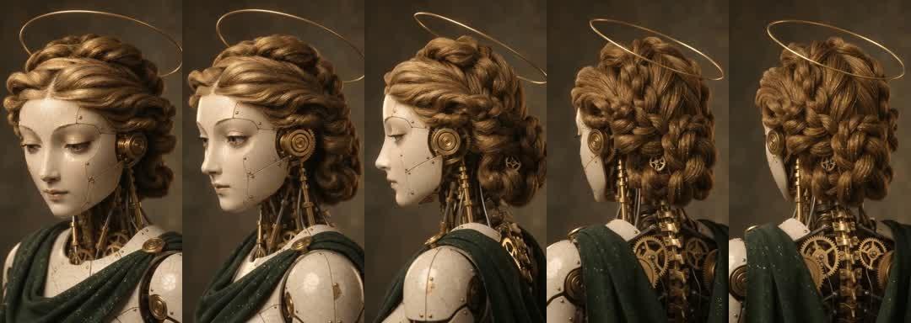
| 本轮交付 | 实测结果 |
|---|---|
| 轨迹范围 | 31 → 78个采样帧 最长连续有效轨迹4.33秒 |
| 顶点拟合 | 591个条件三维候选 最终61个固定目标 786个顶点发生可测位移 |
| 留出时间帧追踪误差 | 中位数1.800 → 1.531 px 下降约14.9% |
| 留出五官标记误差 | 中位数1.910 → 2.381 px 上升约24.6% |
| 纹理覆盖 | 1708片配准选源 1914片参考外观 6354片未观察区域保持灰色 |
阅读范围 第1节定义AI设计视频的约束失配、局部高保真与全局近似刚性原则，以及游戏和动画资产用途；第2至5节回顾前期方法；第6至10节说明当前实现与结果；第11节记录已完成的头发分区重建及后续工作。所有截图均来自原视频或实际重建输出，流程示意图不作为实验结果。
2 方法演进与实验状态
围绕局部高保真、全局近似刚性的资产生成目标，项目测试了全局神经场、头部先验、局部SfM与表面配准等路线。下面比较各方法如何处理AI视频中的不一致，以及对风格、几何与纹理细节的影响。实验来自不同阶段和配置，用于解释取舍，不能当作统一基准上的性能排名。
| 路线 | 已完成的测试 | 主要收益 | 暴露的问题 |
|---|---|---|---|
| Nerfies动态辐射场 | 多轮训练 选110000步 | 可以解释外观与连续形变 | 体渲染较柔 提取网格质量受阈值和密度影响 |
| 辐射场到闭合模板蒸馏 | 固定标准场 共享网格与纹理 | 得到连续可编辑表面 | 继承教师模糊 单表面难表达体积与冲突证据 |
| MonoNPHM | 8帧 官方两阶段拟合 | 已有几何外观和表情先验 | 本例身份与机械细节偏差 发束被合成外壳 |
| 局部SfM与ARAP | 5块 135点后增至417点 | 局部自建形状 检查尺度和重叠 | 深度不稳 加密引入坑洞与更大残差 |
| FLAME共享参数拟合 | 156帧 稠密点和轮廓 | 稳定拓扑 姿态和表情支架 | 身份子空间有限 模板表面仍有滑动 |
| 二维图像配准 | 局部后扩到全脸像素 | 直接改善参考表面的图像定位 | 不产生独立深度 场有空间相关性 |
| 长轨迹与顶点联合ARAP | 78采样帧 61固定目标 | 小幅可编辑形状修正 外观连续 | 薄区域需保护 五官诊断仍有退步 |
| 头发分区SfM与ARAP | 17块 3783点 27帧纹理 | 发束外观更近原设计 统一可编辑外壳 | 局部拼合仍有误差 镂空和拓扑未恢复 |
| 脸与头发合成H02 | 共享头部rig 240姿态核对 | 保留更新脸与发束外观 组件可分别编辑 | 轮廓和镂空仍有误差 眼口控制尚未重定向 |
模型承担不同层次的约束
粗模型用于确定语义区域、邻接、可见性和相机初值；局部图像对应决定哪些表面位置有证据；ARAP限制相邻顶点如何协调移动；纹理恢复细节外观。三者的收益需要分别测量，避免贴图掩盖形状问题。早期角色的嘴眼局部修形与rig作为独立资产保留，本轮没有重新评测完整说话或眼球动作。
DynamicFusion是研究参照，未在本项目运行。其原始方法使用深度输入，通过标准空间与非刚性形变场融合表面[1]。本项目只有RGB，因此借鉴的是标准表面加形变的组织方式，不能直接照搬深度融合。
3 神经场与头部先验的实际测试
Nerfies以标准密度与颜色场加连续形变场解释视频[2]。本地实验关闭独立逐帧外观码与视角颜色分支，并保留刚性和时间约束。后续记录训练至120000步；按照先排除采样翻折、再比较图像指标的准则，选择110000步。[E1]
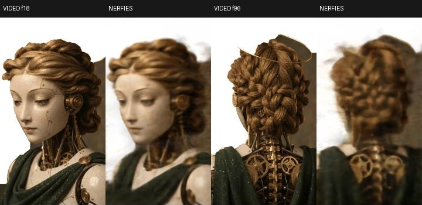
所选110000步的24个留出视角前景MSE为0.00535，采样翻折记录为0；120000步MSE略降至0.00530，但出现采样翻折记录。该记录只是有限采样下的诊断，不能证明整个形变场可逆。
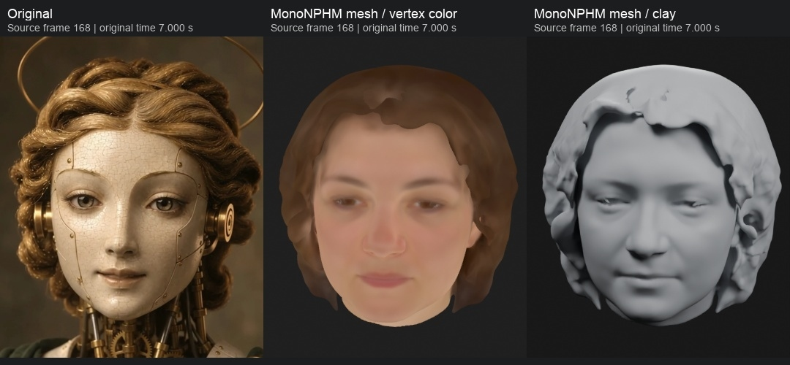
MonoNPHM用神经参数头模联合表示身份、表情和外观[3]。本例导出的各帧网格虽然有限且封闭，仍含小连通分量；各帧提取的顶点数不同。封闭、高面数与图像身份一致性是不同指标，不能相互替代。
4 从辐射场蒸馏为闭合网格的局限
为得到固定可编辑模型，另一实验关闭Nerfies时间形变，从选定标准场渲染24个虚拟视角，以20个拟合、4个留出，优化共享闭合模板。最终使用一套1024²纹理，并通过可见性和法线加权的密集投影烘焙减轻贴图斑块。[E3]
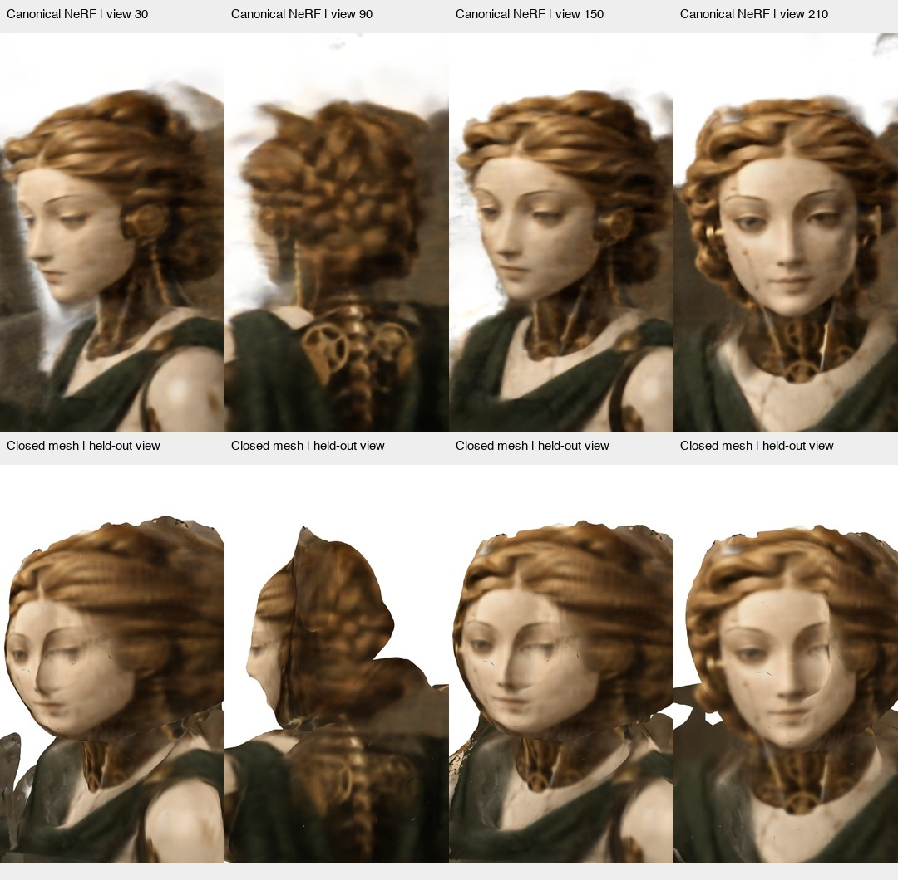
交付网格在这4个教师留出视图上的平均MSE为0.03890，平均PSNR为14.59 dB。它与图2的原视频MSE使用不同目标、渲染与评估设置，数值不能直接横向比较。
图4显示，闭合表面有利于编辑与连续渲染，却仍有面部模糊、头发轮廓与层次损失。一个不透明表面加一套静态纹理需要折中原本的体积密度和矛盾外观。清理网格拓扑能够改善资产可用性，但不会自动补回教师场中缺失的细节。
5 五块局部SfM与加密实验
鼻部、左右脸颊与两块鼻侧过渡区分别做独立局部重建，再用共享track ID同步Sim(3)，固定尺度后以ARAP拼接。初期弱透视低秩与度量升级在原视频上出现深度膨胀和帧子集不稳定，转为受约束局部透视BA；焦距1000 px为假设，另检查800与1200 px敏感性。[E4]

首轮为135个唯一点、235个三角形。加密轮使用原生像素脸部ROI，592个查询经双向神经跟踪、相邻LK、NCC及重复三维筛选，得到417个唯一点、788个三角形。它同时改变了跟踪上下文与过滤流程，不能视为仅分辨率变化的消融。

| 区域 | 首轮拼合误差 px | 加密后拼合误差 px |
|---|---|---|
| 鼻部 | 0.525 | 1.244 |
| 图像左脸颊 | 0.808 | 0.848 |
| 图像右脸颊 | 0.370 | 0.604 |
| 左鼻侧过渡 | 1.129 | 0.813 |
| 右鼻侧过渡 | 0.373 | 0.551 |
两轮ARAP的平均接缝间距下降93.5%与94.5%。但焊接同一ID不会增加深度证据；低图像误差也可能伴随不稳定深度，需另做跨窗口与扰动检查。
6 从FLAME表面滑动到图像配准
FLAME2023 Open提供5023顶点、9976三角形的统一拓扑。原参数拟合采用共享60维身份、逐帧50维表情及下颌和姿态。156帧可拟合，source50至133缺少可靠正脸拟合。加入稠密点与轮廓后，稠密留出误差由4.657降至4.337 px，同时内部五官误差上升，说明参数之间已经存在取舍。[E5]
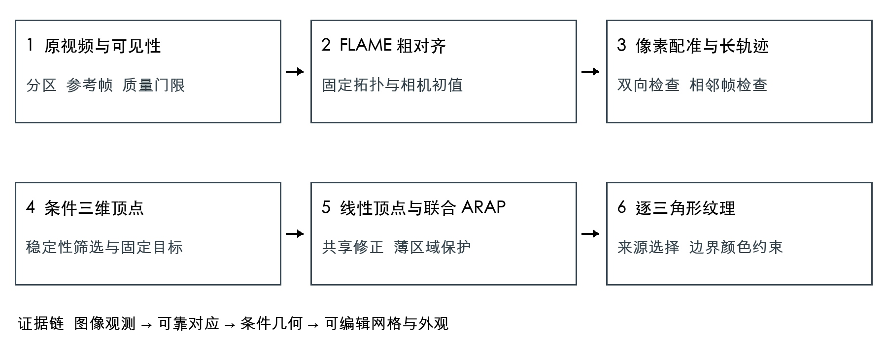
先前的线框审计对每帧真实跟踪点独立射线求交，重新计算三角形ID与重心坐标，再映回同一参考表面。原生592条查询中有555条能形成初始可靠交点；固定绑定的重投影误差中位数约1.71 px，表面位置偏移中位数约0.271%网格宽度。[E6]
![图8 source180的图像配准诊断。先用FLAME作透视粗warp，再求局部残余位移；该阶段只更新二维定位，不改变FLAME三维几何。[E7]](assets/figure_08.jpg)
在相同可靠集合上，局部配准使参考位置偏移中位数由0.272%降至0.096%，与实际tracker的图像差由1.78降至0.60 px；覆盖约58.7%的原可靠集合。固定编号只是标签，独立图像检查和失效区域保留才使“跟住表面”有可检验含义。
7 稠密长轨迹与条件三维顶点
当前全脸跟踪以source168为参考，保留每个参考像素的三角形与透视正确重心坐标。采用FLAME粗warp后的双向DIS配准，再用相邻采样帧直接光流检查参考到当前再到下一帧的闭合关系。场存在空间正则，不能把每个像素都当成独立深度测量。[E8]
| 检查 | 实际门限或规模 |
|---|---|
| 残余配准质量 | 往返误差 <1 px NCC >0.65 灰度标准差 >4 |
| 场与时序检查 | 残余位移 <12 px 二维Jacobian >0.2 相邻闭合误差 <1.5 px |
| 长轨迹范围 | source0至48及134至238 步长2 共78帧 |
| 表面覆盖 | 3132候选三角形 2998片至少2个原生像素 1620片满足长期支持门限 |
| 连续性 | 最长53个有效采样点 即4.33秒 缺失或遮挡区间不插值 |
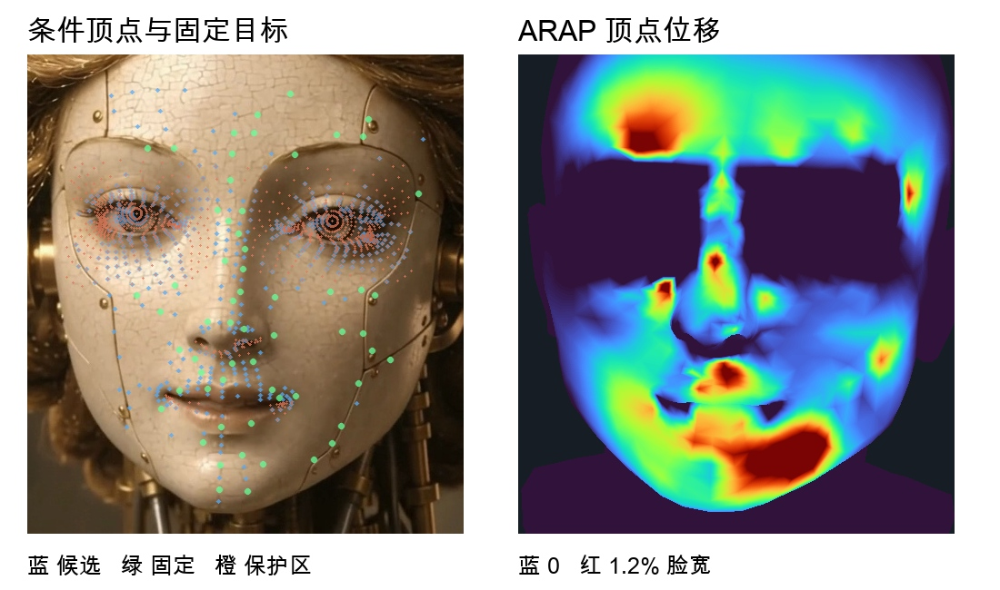
在固定相机、姿态与一阶表情传递下，从多帧二维观测求每个顶点的三维修正。经观测数、线性条件数、残差、删帧与0.7 px噪声敏感性筛选，得到591个候选，其中303个较强；间隔筛选给出113个固定候选，再排除薄区域后最终使用61个硬约束。
“已知位置”是上述模型条件下的估计。它不等于实测三维真值；0.7 px扰动及5次重采样也不是严格置信区间。几何与相机、反射和追踪误差仍有耦合。
8 线性顶点修正与联合ARAP
本轮未知量是参考网格上的共享自由顶点修正。先从FLAME各帧局部一环边估计旋转，把修正近似传递到既有表情；再以透视投影的雅可比求解。这里没有计算完整FLAME参数雅可比，修正后的几何也不再限制在原FLAME身份子空间内。
q⁰为原FLAME相机坐标，B为原全局旋转与固定局部表情旋转的乘积，Δv为共享修正，π为透视投影。相机内外参在本轮固定。与第5节不同，本轮ARAP参考取原FLAME网格，未把局部SfM作为深度真值注入；只求共享修正，不另加逐帧自由位移。
数据项使用1.5 px Huber门限；ARAP使用正值截断余切边权和每顶点局部旋转，并加弱原形先验。先做5轮线性阶段，再做20轮带图像项的局部／全局ARAP迭代。最终61个目标固定到条件三维位置，远离观测的顶点及保护区固定到原形；邻近无数据顶点由ARAP传递，留出顶点不进入数据项。

未保护的首轮ARAP在已有姿态中最多出现20片相对原形法线反向。排除眼睑、鼻孔与唇缘等不稳定区域及邻域后，最终156姿态检查未再发现该类反向；仍未证明全局无自交。保护掩码共2192顶点，包含部分原本未观察的投影重叠顶点，不能全算作新增拒绝观测。
9 定量结果与证据边界

| 检查项 | 原FLAME | 线性修正 | 联合ARAP |
|---|---|---|---|
| 拟合帧追踪 23369条 | 1.645 | 1.380 | 1.377 |
| 留出时间帧 5914条 | 1.800 | 1.533 | 1.531 |
| 留出顶点观测 4646条 | 1.759 | 1.554 | 1.533 |
| 留出五官标记 中位误差 | 1.910 | 2.293 | 2.381 |
| 156姿态法线反向最大数 | 基准 | 0 | 0 |
| 固定目标最大位置误差 | 无 | 数值为零 | 数值为零 |
表中前三行与五官行单位均为原图像素，越小越好。留出时间帧16个；空间留出以顶点ID模7划分，718个顶点不进入相应数据项与硬约束。未保护的候选曾得到更低的留出追踪误差，约1.00 px，但因运动姿态下的法线反向而未交付。
结果能说明什么
最终ARAP的留出时间帧中位误差比原FLAME下降约14.9%，相对线性修正仅从1.533降至1.531 px。当前数据支持“受约束局部修正能改善追踪一致性”，尚不足以把收益单独归因于ARAP。需要保持数据、固定目标和保护掩码相同的消融实验。
五官留出诊断由1.910升至2.381 px。它没有用于本轮拟合，提示局部数据与原五官对齐存在冲突；自动标记也不是人工真值。训练和留出均共享同一视频及固定粗模型，因此只是内部泛化检查，没有实测物理尺度或独立三维扫描。
最终786个顶点发生大于10⁻⁷模型单位的修正。跨156姿态的边长相对变化p99最大约11.4%；这是形变强度诊断，不是误差上界。原角色主文件与原FLAME文件的SHA均保持不变。
10 逐三角形纹理与视觉效果
在固定材料重心坐标下，从配准场找到原视频采样位置，按可见支持、朝向、清晰度与一致性选源。先校正有限曝光增益，再解有限三角形颜色偏移，最后在窄边带和共享顶点上约束颜色；片内保留原始高频细节，不作整体模糊。
这种做法将设计细节的保留落实到局部表面：先为每个三角形选择可靠、清晰的图像来源，再处理接缝，减少错误对应下跨帧平均造成的纹理模糊。拼合需要的小幅几何调整与纹理高频细节分开处理，以兼顾整体一致性、设计风格与局部清晰度。
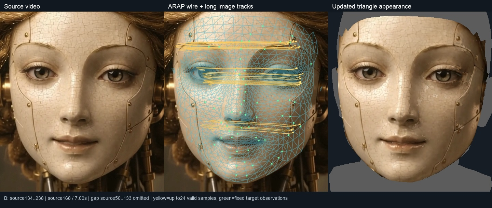
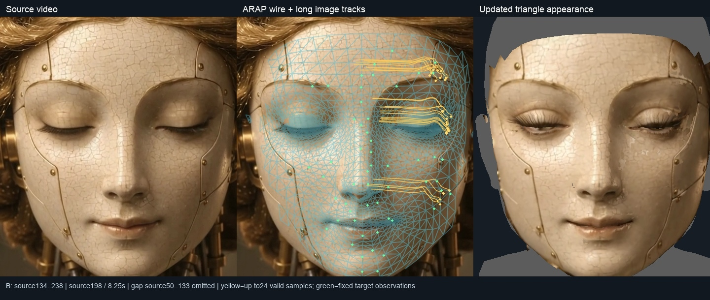
| 纹理类别 | 三角形数量 | 含义 |
|---|---|---|
| 配准后选源 | 1708 | 通过采样支持筛选的视频来源 |
| 参考外观回退 | 1914 | 只有source168外观 不新增深度证据 |
| 未观察 | 6354 | 无可靠外观 以灰色标记 |
边界26120个采样的RGB向量差p90由14.17降至1.09，单位为0至255颜色尺度的欧氏长度。这验证边界颜色更连续，不等于原视频重建误差更低。纹理仍包含拍摄光照与反射；Blender用发光材质显示捕获外观，灰模另用灯光，尚未恢复可重光照PBR材质。
11 头发分区重建结果与后续工作
头发分区重建已在另一对话“pixeltrackingwithetemplate”完成第一版，不能继续归为尚未实施的方案。本节依据该对话的完成记录及hair_patch_sfm_arap_20261114目录中的实验清单、数值报告和原生验证结果补充。头发独立候选与后续H02脸发合成均已完成，合成后的原图对比与接口范围在本节补充。[E9]
发束分区与局部观察窗口
实际划分17个相互重叠的发束patch：前部4块、侧面5块、后部8块，参考帧分别为source168、60和96。全视频240帧用于可用轨迹的采集，各块使用参考帧前后18帧的短窗口做局部SfM；跟踪遇到失败便停止，不填补缺失区间。原有头部相机与粗外壳提供尺度和坐标基准。

| 检查项 | 已保存的结果 |
|---|---|
| 发束patch与追踪 | 17块 共5888个查询 |
| 局部几何 | 3783个通过筛选的SfM点 3699个网格约束 |
| 几何支持范围 | 15块有几何支持 R01与R07仅用于外观 |
| 拼合表面 | 5502顶点 11000三角形 一个连通外壳 |
| 纹理来源 | 27帧 6411片有视频纹理 4589片保留统一底色 |
| 原生核对 | 240帧重载检查 最大顶点差约2.38×10⁻⁷模型单位 |
局部SfM与近似刚性拼合的实现
每个发束独立优化三维点与低维、平滑的局部姿态修正，并固定参考姿态消除自由度。初始深度和弱形状先验来自已有外壳，因此这些结果仍是条件重建。约五分之一时刻留出作诊断；局部姿态修正也可能吸收AI变化或共同的追踪漂移，不能将低残差直接解释为真实深度。
各块先通过Sim(3)放入粗模坐标系，再剔除局部对齐的尺度与位姿成分，将相对形状传递到同一个连通外壳，以ARAP、弱原形先验和形变幅度限制协调。求解中使用防反向线搜索；静态位移受6.5%头部宽度的信赖域限制。该限制是工程约束，不能等同于人眼感知阈值。
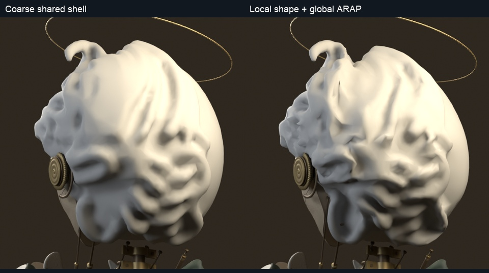
| 同一局部留出诊断 | 中位重投影误差 px |
|---|---|
| 粗外壳参考 | 6.588 |
| 各块独立局部SfM | 1.064 |
| 拼合后外壳 使用局部相机 | 4.285 |
上述25860条观测的诊断使用局部SfM相机，比较的是局部解与拼合外壳之间的取舍。拼合后误差高于独立局部解，说明全局连续性约束需要折中局部拟合；这些数值不是未修正全局相机下的误差，也不是独立三维精度或与面部实验直接可比的指标。
纹理效果与最终运动方式
纹理按朝向、可见性、头发掩码与清晰度，从27个视频帧选取。附近帧的注册采样和一致的主视角区域减少逐三角形选源的斑点，再以有限颜色偏移和窄边带约束接缝。45210个边界采样的RGB差异p90由25.21降至2.09；它反映边界连续性，不能证明发丝结构恢复正确。
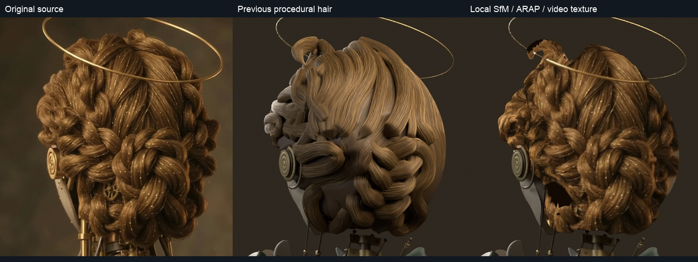
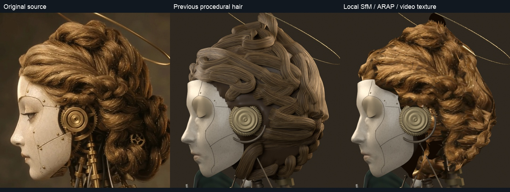
最终交付采用一份共享静态ARAP外壳，跟随原有头部rig运动。曾测试将独立局部运动修正传到外壳，但少量姿态出现跳动，因而保留为未采用候选；最终没有新增逐帧自由头发形变。局部重建允许小幅修正、全局资产保持连续稳定，这一取舍符合本报告的近似刚性原则。
已有结果验证了发束分区、局部条件几何、ARAP外壳和纹理资产的完整实验流程；未重建逐根发丝或辫结内部连接。未观察面保留统一深棕底色，贴图包含原视频光照与高光。原角色文件保持不变，后续H02版本已把新头发与更新FLAME脸面合成；两个源实验文件仍各自保留。
脸与头发合成后的整体效果
本节图18—24当前统一使用R02修正后的脸与头发，均取自本轮Blender Cycles原生渲染。R02保留原眼嘴/下颌Rig及Stage20的150节点头发运动，加入额头发际线局部平滑、窄圈UV岛和固定纹理衔接。两套相机仍以逐帧刚体坐标变换统一，未重新联合拟合。
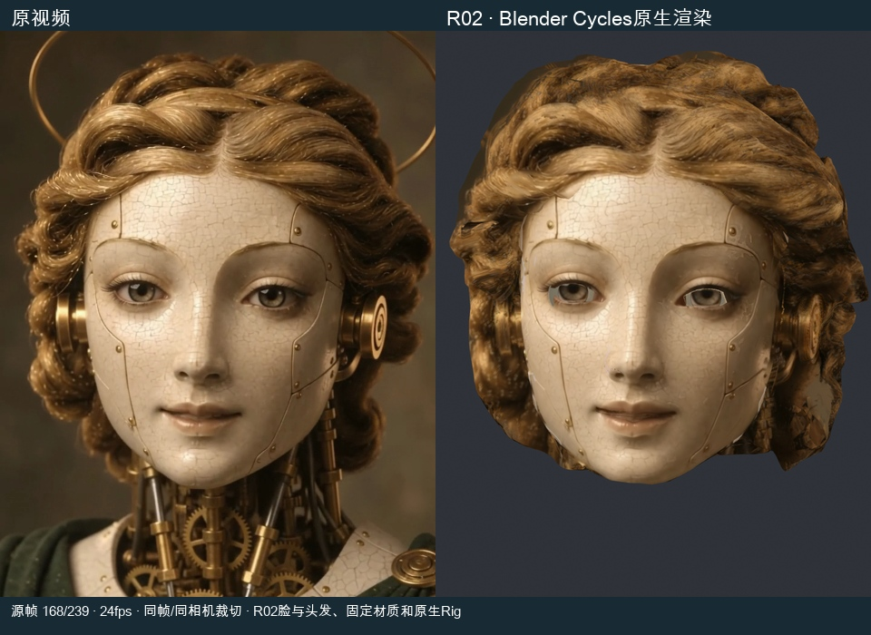
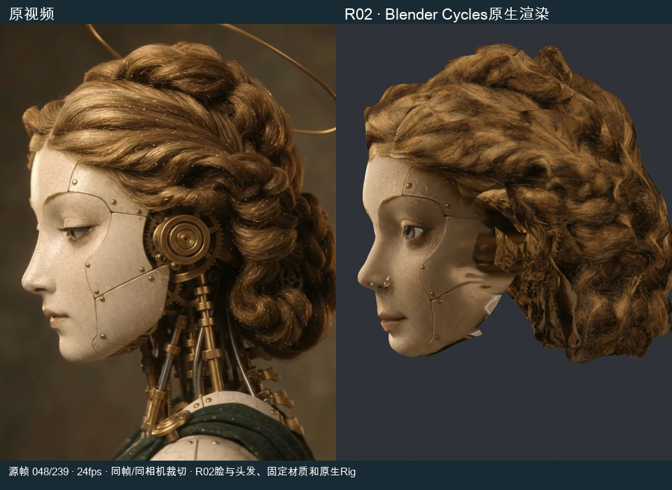
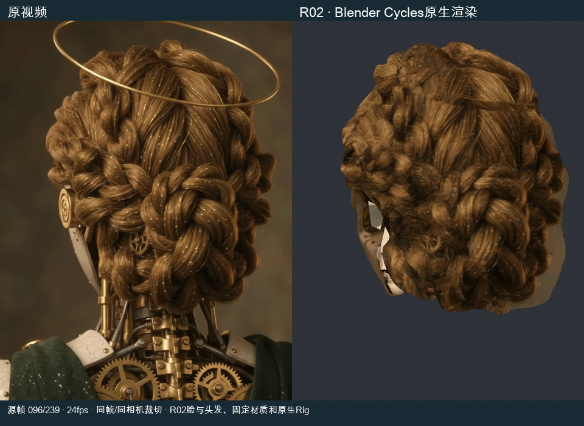
第一帧微倾角与说话表情
为检查合成资产在不同姿态与表情下的一致性，补充第一帧source0，以及说话前、张口、回收和闭眼状态。图像均来自同一源帧的原视频及实际H02渲染，采用统一裁切；第一帧保留原有微倾角，没有将其校正成正面。
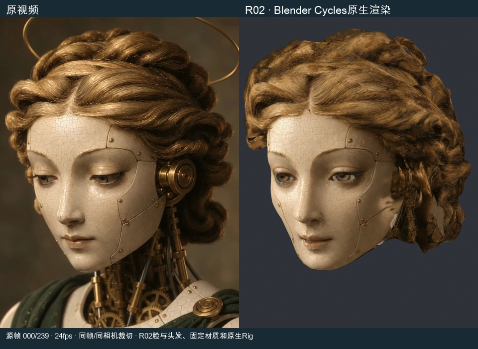
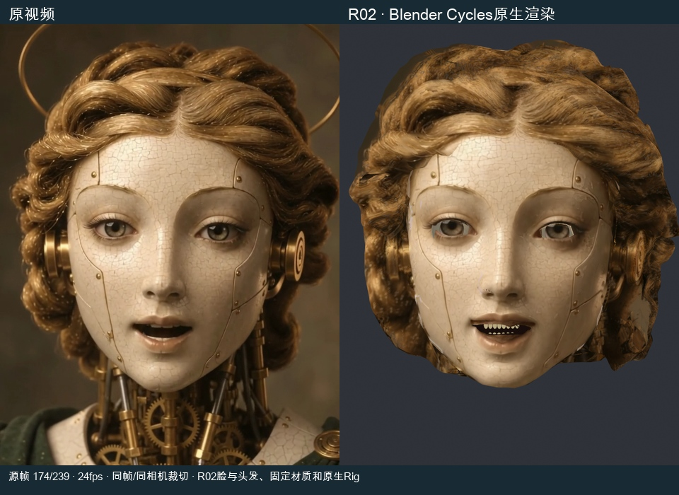
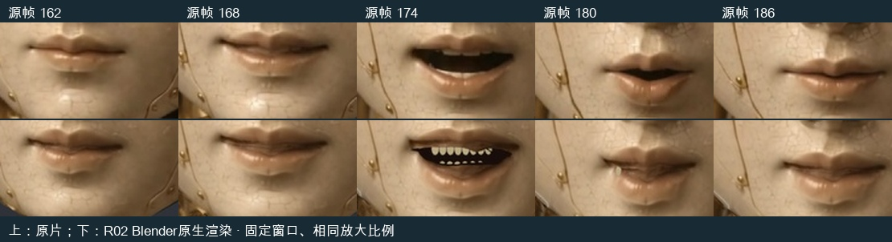
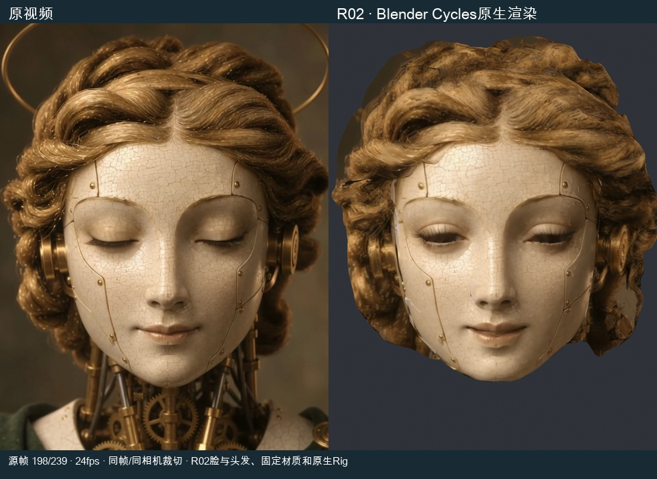
这些说话帧位于已有FLAME观测区间，沿用其表情形状键；它们与source50–133的过渡表情区间不同。对比主要用于定位嘴形、眼睑和内部口腔的不足，未新增牙齿、舌头或独立口腔结构。
此次合成保留2186个脸部顶点与4017个三角形，并使用83片发际线过渡三角形；脸与头发的共同父级、240个姿态及打包纹理已经原生核对。240帧中的156帧保留已有FLAME表情，其余source50–133为平滑衔接，不是新增图像拟合。
总体上，最终模型的正面外观比旧脸更接近设计图，风格与局部细节的保留效果较明显。侧后方比较也显示几何轮廓、镂空与表情仍需改进。当前证据支持一份具有可编辑性和整体观感一致性的资产候选，不应把贴图相似度直接解释为所有几何细节已恢复。
脸、内侧头骨衬层与头发仍是可以分别编辑的组件，发际线为重叠接口；并非一个完成水密焊接的单一网格。原眼口控制器尚未重定向到新FLAME脸面，已有的源表情播放保留。
后续改进与研究参照
下一步应优先处理头顶轮廓、发际线与面部的衔接、辫结间镂空和接缝，并在同一相机、同一纹理下比较灰模。增加视角、相机有界联合优化、发丝方向约束与局部运动平滑，需要做受控消融；在已完成的H02合成基础上，应继续改善侧面轮廓、遮挡与眼口控制适配。
MonoHair的patch多视图外部重建与内部先验[4]，以及CGHair的发卡聚类与共享外观[5]，可为后续更细的发丝或紧凑资产表示提供参考；两者仍不是本项目已经运行的方法。
12 复现索引与参考资料
R02阶段交付记录：Blender模型、GLB、Three.js检查页、720×1280原生Render Video及同帧原片对比。此前独立FLAME、分区头发、H02和R01均作为历史实验保留；它们的验证与误差统计不能直接移用于R02。R02的240帧原生网格、接缝、控件及视频检查记录见hairline_r02_20261116/results。
项目证据索引
E1 Nerfies选模与预览（本地文件）
E2 MonoNPHM实验清单与原始输出（本地文件）
E3 闭合模板蒸馏与交付图像指标（本地文件）
E4 五块局部SfM两轮比较（本地文件）
E5 FLAME稠密点与轮廓拟合（本地文件）
E6 独立射线落点与表面滑动审计（本地文件）
E7 原图配准的相同掩码比较（本地文件）
E8 长轨迹与ARAP交互对比（本地文件）
E9 头发17个分区与ARAP外壳实验（本地文件）
E10 最终脸与头发合成H02及原生验证（本地文件）
对应对话 pixeltrackingwithetemplate
当前 Blender模型 FLAME_tracked_vertices_joint_ARAP.blend（本地文件）
长轨迹与纹理对比视频（本地文件）
复现代码位于flame_arap_texture_20261114/code；数值与核验记录位于results，长轨迹与质量场位于tracking。保留几何、纹理、原生重载及源文件SHA报告。网页通过资源与JavaScript语法检查，未进行浏览器自动视觉验收。HTML图片已内嵌，可离线独立查看；Markdown图片保存在相邻assets目录。项目索引链接依赖本机原目录。
研究参考
[1] Newcombe等 DynamicFusion CVPR 2015 深度驱动的非刚性重建
[2] Park等 Nerfies ICCV 2021 标准辐射场与连续形变
[3] Giebenhain等 MonoNPHM CVPR 2024 单目RGB神经参数头模
[4] Wu等 MonoHair CVPR 2024 单目视频与patch多视图头发重建
[5] Luo等 CGHair CVPR 2026 发卡聚类与共享高斯外观
资料说明 论文用于说明方法来源；本项目的效果判断依据保存的实验记录与实际输出，未引用论文的基准成绩作为本视频的重建精度。报告中的完成状态以2026年11月14日本地记录为准。
100控制节点分色检查与真实profile约束
新增固定正面、+70°侧面逐帧检查页和完整240帧24fps视频。洋红大圆点为固定编号0–99的100个DG控制节点；青色小点为实际参与拟合的跟踪观测；黄色方块为真实侧转帧profile轮廓约束。可独立开关各层、查看节点编号、选择节点逐帧检查、切换灰模/纹理及隐藏节点透视。没有增加逐顶点优化参数。
旧Stage14读取追踪目录不完整；本次合并原始和扩展两处观测，按相同0.35法线门控及余弦平方权重处理，实际使用156个有效追踪帧。在57个侧转帧加入306条profile法线方向约束，数据来自真实图像Landmark附近边缘及Landmarker不可靠帧的可见鼻/唇/下颌边缘，不使用虚拟侧面图作为测量。
Profile每帧重新关联，限制图像轮廓法线距离，允许沿轮廓切线滑动；不把轮廓当成稳定物质点。既有100节点旋转保留，在同一组节点上拟合源相机XY平移修正，Z增量最大1.39e-17。增量仍只有200参数/帧，网格全部变化由固定蒙皮权重插值得到。
同一有效跟踪集合的未加权2D欧氏中位误差0.379→0.362px；加入profile后的三维二阶差分中位数为0.00004903 head_width，较基准0.00002559有所增加。新增约束与旧历史指标不能混用。表面方向保护检查无新增参考法线反转，无面积降至基准5%以下的有意义三角形。
打开100节点逐帧检查（项目内文件） · 正侧面24fps视频（项目内文件） · profile求解记录（项目内文件）
2026-11-15：贴纹理与原视频比较，发现表情缺失
将最新100节点与profile约束的几何使用现有固定2K贴图，按原视频同一相机、同一源帧渲染全部240帧，24fps、10秒。没有本次几何拟合、纹理更新、逐帧原图调色或目标照片合成。另提供与既有头发外壳的真正3D合成。视频每栏480×624，12个关键帧另存每栏720×936原尺寸。
中性脸可以保留裂纹、装饰及材质风格；但该100节点分支未恢复说话和眨眼：源174帧唇间距约35.6px，模型约0.7px；源198帧左眼开合约6.1px，模型约30.5px。已核对FLAME顶点拓扑与投影，故不只是贴图造成的视觉差异。
该结果提醒：经门控的稠密目标子集低残差不能单独证明完整表情恢复成功。嘴部和眼睑开合需要显式观测约束及后续rig；不能把这里的纹理对比写成当前100节点已完成说话或闭眼。顶部UV拉伸、边界截断、口腔牙齿和头发缺口仍可见。
逐帧查看纹理脸与原视频（项目内文件） · 完整24fps对比（项目内文件） · 嘴/眼几何检查记录（项目内文件）
2026-11-15：补充眼睑、眼球、唇部与下颌的局部Rig
针对上一轮纹理对比发现的表情缺失，保留100节点全局重建，另以显式唇部/眼睑观测和实际眼睑孔边缘建立局部表情曲面。新增图像拟合仍限当前相机XY，Z锁定，全240帧二阶时序平滑；实际可见观测156帧，遮挡期间只能延续先验。额头、鼻梁等局部支撑之外的位置保持原形。
两片原有贴图眼球帽替换为独立球体，以参考帧虹膜采样作球面UV；眼睑壳用球体曲面先验修形并补厚度边缘，另建口腔内壁、8颗上牙和6颗下牙。球体半径、眼睑壳深度、口腔和牙齿都是建模先验，不是由单目2D误差恢复出的可信深度。眼睑壳修形后沿当前相机射线保留已拟合的2D位置，应与图像残差的Z锁定区别说明。
本版提供左右独立转眼、左右眨眼/睁大、下颌开合、唇部开合、嘴宽、噘嘴和双侧微笑。视频拟合动画与手动控件分层；下颌恢复解剖权重，带动下唇及下牙。手动闭眼采用局部拟合后的曲面形状，避免把整片眼周压成一条直线。原片第174帧唇间距，本版约34.7px，原片Landmarker约35.6px，上一版约0.7px；仍不能用该拟合量代替独立3D精度。眼睑需另外检查真实孔边缘与眼球遮挡。
完整240帧同相机纹理预览和5秒Blender原生手动Rig演示已分别交付。文件重新打开后验证了中间数值控件、实际网格运动、左右独立眼球旋转及动作回放；贴图打包，无需Python逐帧回调。原片眼球注视方向尚未重追踪。眼睑UV、牙齿细节、原有头发/额头边界仍属原型质量，尚未完成完整音素库或游戏引擎验证。几何法线相对基线的反向现象仍保留诊断记录；嘴唇开合的局部旋转与孔边缘退化不能仅由法线点积判定为网格翻转，也不能据此宣称模型完全水密或可直接生产。
眼嘴局部重建与Rig逐帧检查（项目内文件） · Blender可编辑模型（项目内文件） · 关闭视频表情层的手动Rig演示（项目内文件）
上一轮R01与Stage20组合记录（R02之前）
当时的R01展示模型为r01眼/嘴/下颌局部Rig + Stage20的150节点头发形变图 + Stage21固定2K头发纹理。当时图18—24使用这组模型；当前图18—24已刷新为R02原生渲染，旧版本保留作历史记录。该组模型的首帧微倾、正面、侧面、后部、说话和闭眼对比，另提供240帧/24fps全段视频与可旋转的Three.js页面。
头发记录：38198条短跨度轨迹覆盖240帧，每帧至少1807条活跃轨迹；平滑后的加权像素拟合统计为2.7898，中位数为2.2878px。这是该头发实验观测集内的拟合统计，不是独立3D误差，也不能与脸部另一观测集的0.147px直接比较。新版贴图融合66帧，记录的UV观测覆盖率为54.0%；未观测区域与细发丝不能据此宣称已真实恢复。
Three.js页面支持完整逐帧动画、手动嘴型/下颌、左右眨眼与转眼、网格/骨架、正侧后视角。GLB保留独立眼球骨架和手动形变目标；原片240帧形变另以量化几何缓存播放，不能误称为GLB中已含标准骨骼动画。网页版不依赖外部CDN或本地服务器。原始Blender源文件未修改。
本轮只组合和导出已有最新成果；相机坐标统一是刚体变换。发际线接缝、额头纹理拉伸、眼睑UV、注视方向、牙齿细节、发束镂空仍有可见不足，尚未验证生产级游戏资产标准。
打开最新Three.js交互模型（项目内文件） · 最新组合与原片24fps视频（项目内文件） · 下载最新GLB（项目内文件）
2026-11-16：R02发际线局部修正
当前图18—24已刷新为R02。仅处理额头/头发交界：裁去穿出头发的48个额头上缘三角面；额头232个顶点和前缘发束622个顶点作有界局部平滑，窄圈边缘藏入发束下方。同一标准形状修正用于全部240帧，未重新逐帧自由拟合；额头修正的参考相机深度增量为零。
原UV在交界处拉伸、局部采样混叠，故增加独立窄圈UV岛和255个只为UV接缝复制的顶点。复制顶点保留完全相同的每帧位置和表情控制。脸部合图4096×2048保留原2K区域，再加局部投影岛；不能把合图尺寸解释成新增4K观测细节。固定纹理使用可靠视角补烘焙，正面168作为局部主参考，向原贴图渐变，未对整脸全局模糊或逐帧调色。
原有眼嘴/下颌Rig与Stage20头发运动保留。逐帧核对新的UV接缝位置、面部导出和两套相机下的头发投影；Three.js、GLB、Blender文件和整段24fps对比同步更新。后部发束镂空、眼睑与注视等既有误差仍需后续处理。
发际线修正前后（项目内文件） · R02 Three.js（项目内文件） · R02 Blender（项目内文件）
R02发际线：几何与固定UV修正前后
仅修整额头与发束交界：去除穿出头发的48个三角面，额头232个顶点与前缘发束622个顶点作有界局部平滑；使用固定标准形状修正覆盖全部240帧。独立窄圈UV岛复制255个接缝顶点，保持相同位置和表情控制；脸部4096×2048合图保留原2K内容并加入局部投影岛，不代表获得额外4K观测。以下直接展示修正前后的局部结果。
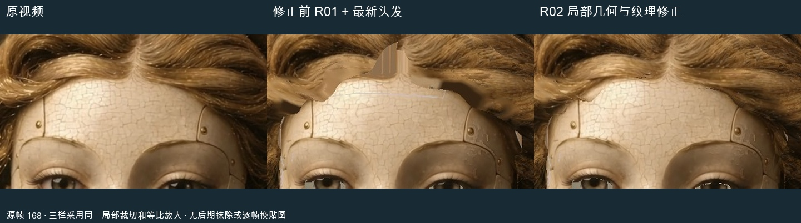
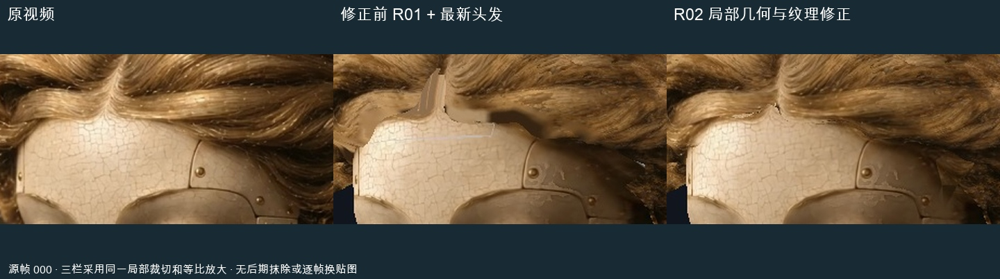
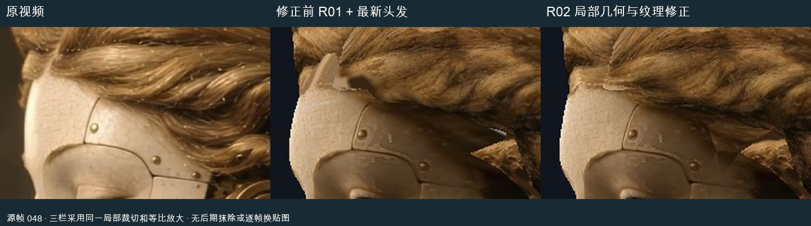
R02原生Render Video：720×1280、240帧、24fps
本节为R02留档视频，尚未包含R03动态发根绑定。当前版本请看R03完整运动检查（项目内文件）。
从保存的R02 Blender文件逐帧渲染：Cycles，16采样及降噪，固定R02材质，原生眼嘴/下颌与头发动画，保留源视频音轨。没有使用旧数值预览冒充原生渲染，也没有逐帧原图调色。头部资产不包含原片背景或完整身体。
打开独立Render Video（项目内文件） · 打开与原片同帧对比（项目内文件）
查看独立720×1280渲染
R04 · 额头、太阳穴与耳周交界精修
更新日期：2026年11月16日。 本节记录R03绑定修复后的局部资产修订，使用最新R04脸、头发、过渡面和机械耳盘。原有分片—跟踪—局部重估—ARAP—DG路线及其历史实验分数保留；本轮没有重新运行SfM，也不把旧像素误差当作新模型的精度。
问题：绑定不断开，交界外观仍会露出折片与贴图空白
R03通过共同头部运动和发根附着处理动态脱离，但补面按边独立生成，向整个头部中心收缩过深；转头时会暴露拉长的折片。侧面纹理还含灰白UV填色、图像投影拉伸，耳周缺少与原片机械造型相符的承接结构。因此，发根约束残差接近零不能说明所有交界表面已经连续、平滑。
几何：连续过渡面与机械耳盘
以13排、1,066顶点和1,584三角形的连续网格替换旧补面，内部共享邻接顶点。脸端固定到原脸边界，保留原有表情传递；发端取邻近头发材料点的平滑插值并藏入头发外壳。局部内收幅度上限为0.018模型单位，避免深折回头内。
可见侧机械耳中心由原片第0、48、168帧的二维位置与现有相机估计，再以参数化同心环浮雕构造耳盘。该中心在这三个拟合观测上的重投影误差约4.9—5.3px，只是内部拟合残差。另一侧耳盘保留对称造型，并由两个弱可见边缘观测修正位置；不宣称其不对称细节已经重建。
脸部主体、头发主体、240帧运动、相机、眼嘴控制数组与R03一致。新部件跟随真实共享头部父节点；嘴、下颌、眼球与眼睑Rig保留。
纹理：局部多视图烘焙与窄带衔接
使用源帧0、24、48、134、156、168、220，按法线朝向与脸/头发合并深度遮挡选择图像，重烘焙太阳穴和边界窄带，保留额头中央已有的专用UV岛。空白UV延伸邻近有效颜色，端点颜色在窄带内羽化，并对曝光差作有限低频协调。机械耳使用侧面原图注册后的固定极坐标UV贴图。
全部视频使用固定材质，没有逐帧原图覆盖。过渡UV图按当前门控约26.0%有直接图像采样支持，其余依靠邻接材质插值；该统计包含隐藏和未参与显示的UV区域，不能当作可见接缝的覆盖率。较少观测侧太阳穴窄带使用局部镜像纹理先验。
结果：原片、修正前与修正后
图30—35均使用实际保存的原片与Blender渲染。可见侧耳周空隙和深折片减少；脸与头发的交界外观更完整。原片与资产仍存在发束体积、局部纹理和眼嘴表情差异，图中保留这些差异。
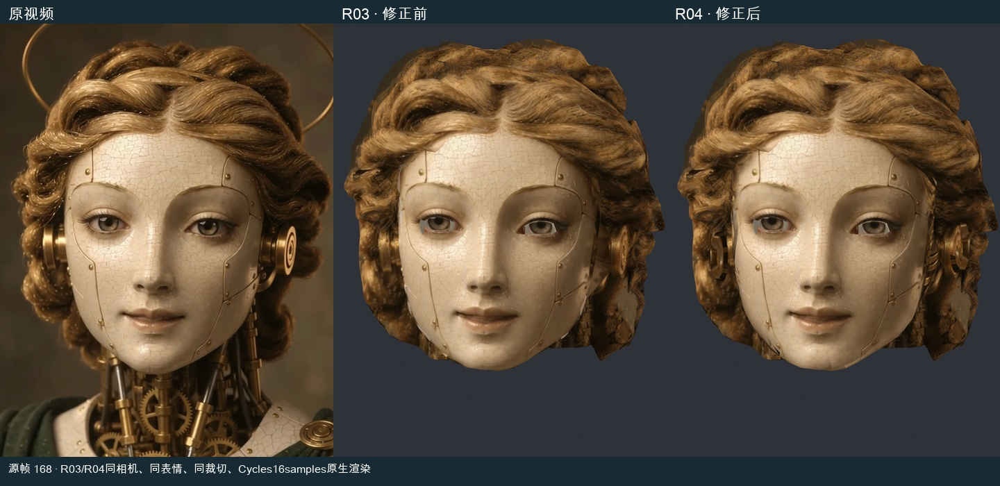
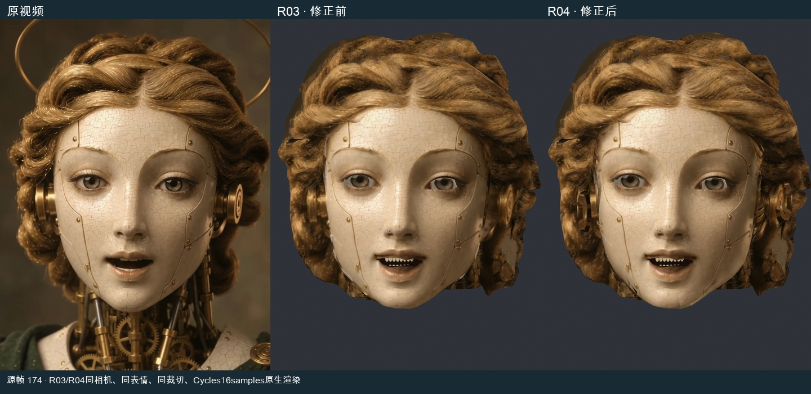
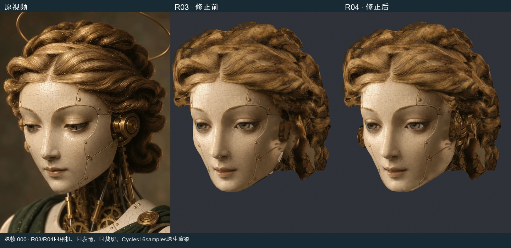
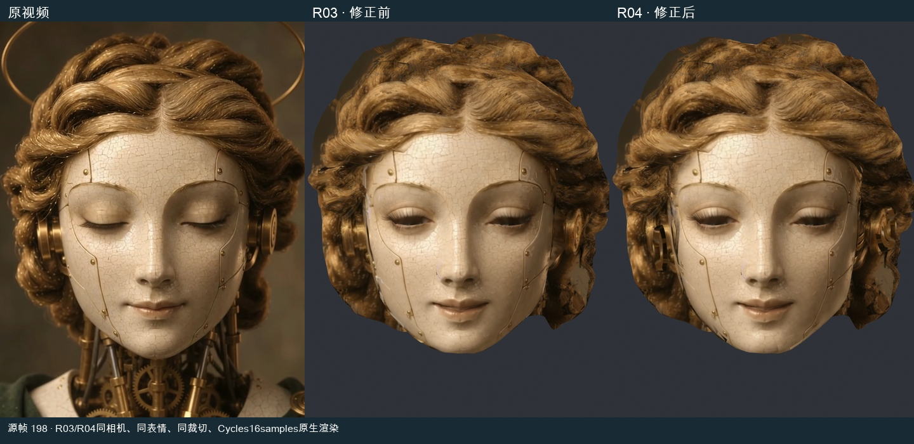
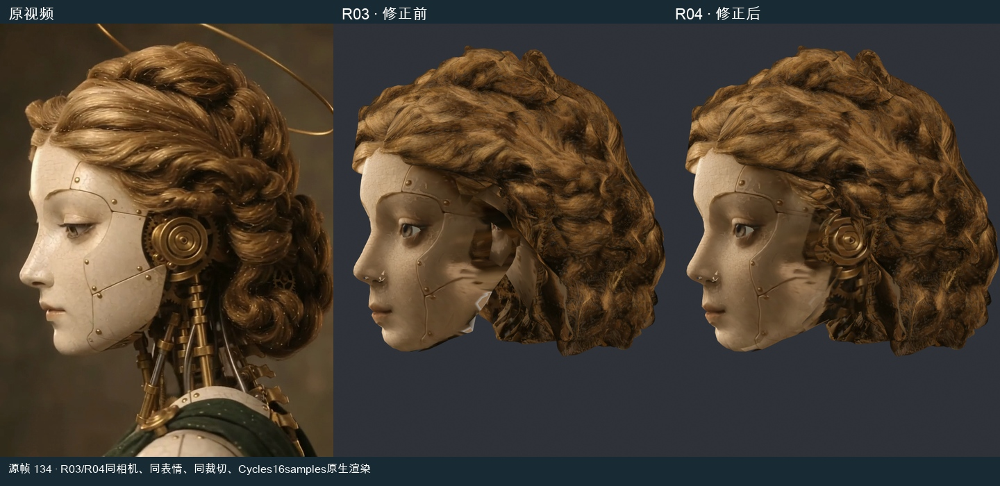
转头、说话与逐帧检查
打开R04逐帧与修正前后检查页（项目内文件） · 10秒同帧对比（项目内文件） · 4秒说话近景（项目内文件） · 5秒额外转头检查（项目内文件） · 独立原生渲染（项目内文件）
同帧对比覆盖全部240帧，使用原片拟合相机。额外转头段固定源168帧的中性表情，旋转真实头部父节点±55°，相机按整个头部的运动范围取景，并裁去空白背景；它与原片没有逐帧相机对应。Cycles使用固定纹理；渲染副本中的顶点缓存与原生模型经过一致性核验，可编辑模型保持原有Rig。
| 项目 | 记录 | 解释 |
|---|---|---|
| 过渡网格 | 1,066顶点 / 1,584三角形 / 13排 | 替换分散且深内收的旧补面；相邻条带共享顶点。 |
| 240帧脸端接触 | 最大坐标分量误差 0 | 脸端与同帧脸部边界吻合。 |
| 240帧发根附着 | 最大距离误差 4.77e-07 | 沿用R03发根绑定；单位为模型坐标。 |
| 240帧发端材料插值 | 最大坐标分量误差 2.62e-06 | 相对邻近头发材料点的平滑插值目标。 |
| 手动下颌动作 | 脸端最大坐标分量误差 2.38e-07 | 手动张嘴时过渡面的脸端继续贴合。 |
| 额外75°转头 | 共同运动最大坐标分量误差 4.77e-07 | 脸、发、过渡面与耳盘共享头部父节点。 |
| 原片同帧对比 | 240帧 / 24fps / 10秒 | 原生渲染720×1280；并排视频960×700。 |
| 说话近景 / 额外转头 | 96帧4秒 / 120帧5秒 | 前者对应原片第144—239帧；后者为固定中性表情的几何转头。 |
上述几何残差均为模型坐标单位，验证的是附着和共同运动，不是独立三维精度。视频均通过完整解码和帧数、帧率核对。
保留的问题与交付
观察不足的一侧仍有对称先验，隐藏补面部分纹理为插值；头发外壳在大角度下仍有低频块面和纹理拉伸，眼鼻也保留上一版部分瑕疵。本轮没有证明完整水密、所有表面相交均消除或生产级全无缝。资产适用于概念设计与后续游戏/动画制作中的迭代。
R04可编辑Blender模型（项目内文件） · 局部范围核验（项目内文件） · 240帧连接检查（项目内文件） · 视频与交付核验（项目内文件）
下方94秒全流程视频保留当时R03资产作为方法演示；最新交界外观、说话和转头结果以本节R04为准。R02、R03版本作为历史记录保留。